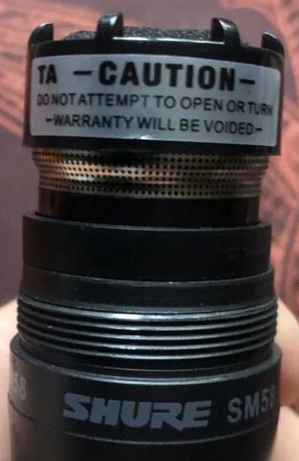
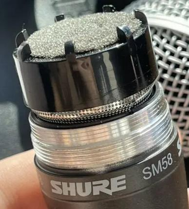
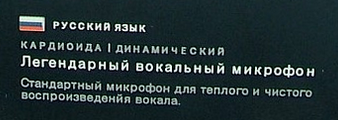

Здесь собраны основные признаки, по которым можно отличить подделку в линейке микрофонов SHURE SM58 от оригинала. Микрофоны модели SM58 активно подделываются много лет, поэтому оригинал найти очень сложно. А в последнее время появились даже продавцы, которые не завлекают покупателя ценой, а продают подделки по цене оригинала.
Наличие XLR шнура
В комплекте к SHURE 58 шнур никогда не прилагается. Есть шнур - значит подделка.
Технологические отверстия
Вот фотография оригинального микрофона SHURE SM58:
Видно, что внизу есть два отверстия: под винт и под XLR-защелку.
У подделок может быть три отверстия:

На надпись CE можно не ориентироваться, ее может и не быть у оригинала.
Однако в новых подделках уже делают два ответстия! Поэтому нужно внимательно смотреть и на другие признаки.
Отличия в дизайне
Внешний вид микрофона SHURE 58 - разработан профессиональными дизайнерами и фиксирован. Недопустимо, чтобы накладка выключателя была не в цвет самого микрофона. Если накладка блестящая - это подделка.
Нанесение шрифтов
Надпись по кругу, рядом с головой микрофона, сделана так, что расстояние между словами SHURE и SM58 одинаковое по всему кругу. Если где-то расстояние сбивается, и это сильно выражено, например так:
SHURE SM58 SHURE
или так
SHURE SM58 SHURE
То это подделка.
Лишние наклейки
Под круглой головой поддельного микрофона можно найти вот такую наклейку, которой нет на оригинале:

В момент покупки надо не стесняться, открутить головку микрофона и посмотреть что там под ней. Такого вида наклейка говорит о подделке.
Особенность резьбы под головку
У оригинального SHURE SM58 резьба под головку - металлическая, не окрашенная, и имеет две "ступеньки".

Если резьба с одной ступенькой, или она окрашена, или она вообще пластмассовая - это подделка.
Контакты разъема XLR
В оригинальном микрофоне контакты хромированные, гладкие, блестящие. У подделок зачастую эти контакты желтоватые.
Вес
Оригинальный микрофон весит около 298-329 гр. Подделки чаще всего легче, например 237 гр.
Отдельно, шарик головки должен весить ~45 гр. У подделки он будет легче, например ~37 гр.
Карманные электронные весы (кухонные или ювелирные) помогут проверить вес в момент покупки.
Прочие признаки
Ориентироваться на шрифты, оформление коробки и наклейки на коробке в последнее время бессмысленно. Китайцы подняли качество полиграфии, научились работать со шрифтами, умеют верстать с модульными сетками.
Откровенные подделки видны сразу. На фото ниже можно обратить внимание на отдельно стоящую букву "н" в слове "микрофон", и букву "й" вместо "и":

Однако такую подделку еще надо поискать. Многие подделки имеют правильный текст и верстку.
Несуществующие модели
На официальном сайте имеются следующие модификации микрофонов:
Никакой модели SM58 SK не существует, это подделка.
Стоимость
Реальная рыночная стоимость в розницу на официальном сайте SHURE SM58 LCE - 120 евро, а SM58 SE - 130 евро на 2025 год (базовая комплектация). Закупщики покупают по оптовым ценам, но сюда надо добавлять завышенную стоимость валюты, чем официальный курс, дополнительную оплату за серую схему поставок, наценку всех бенефициаров в цепочке поставки, включая конечного продавца. Один только конечный продавец ставит наценку минимум 30%-35%.
Если новый микрофон продается ниже этой цены, то это однозначно подделка.
Альтернативы
Можно рассмотреть RODE M1. Отличие его от SHURE SM58 в том, что у SHURE SM58 заявлены частоты от 50 до 15000 Гц, а у RODE M1 - от 75 до 18000 Гц. Учитывая, что при записи с SHURE обычно включают фильтр нижних частот, то никакого смысла в 50 Гц особенно нет, если только не записывают какого-нибудь певца с супер басом.